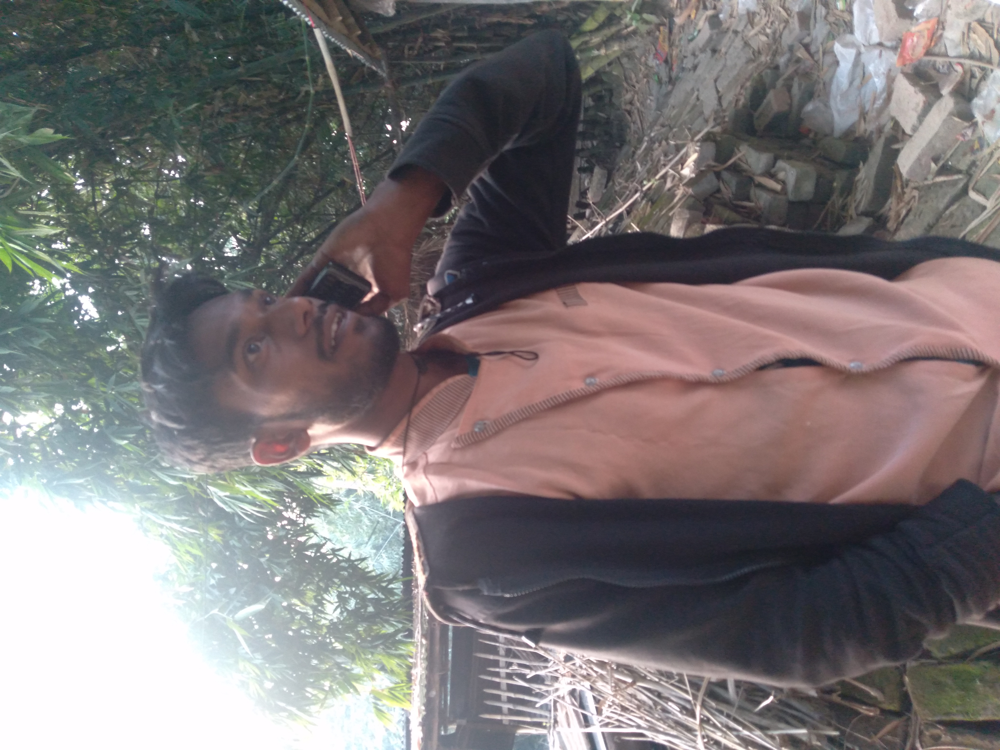
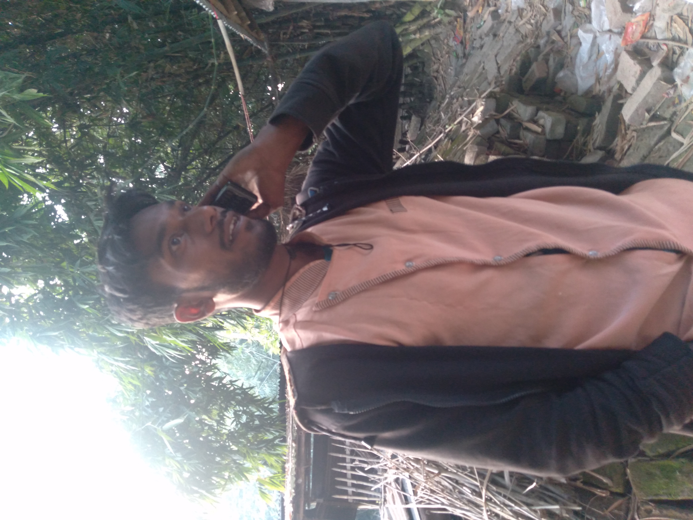

আমার আপনজন!
এটা আমার ফ্রেন্ডলিস্ট,
আজপর্জন্ত আমার যত ফ্রেন্ড আমি বানিয়েছি তাদের একটা লিস্ট!
বিঃ দ্রঃ আমি সবাইকে উল্লেখ করতে পারি নাই , কারন আমার কাছে সবার ফটো নাই । এর জন্য আমি আন্তরিক ভাবে দুঃখিত !
সবার আগে আমি আমার বেস্ট ফ্রেন্ড দের সাথে আপনাকে পরিচয় করিয়ে দিই !
নয়ন বন্ড
সবার আগে আমার প্রথম বেস্টফ্রেন্ড ইউসুফ ( নয়ন বন্ড ) আমি ছোটবেলা থেকে ওর সাথেই খেলতাম , ফাইট করতাম , মারামারি শয়তানি , দুষ্টামি সব দুইজন মিলেই শিখা আর কই । আর আমরা দুজন এলাকার সবথেকে সইতান (দুষ্টু) চিলাম । এলাকার সবাইকে জালাইতে থাকতাম । আর এটাই ছিলো আমাদের কাজ । বিশেষ করে পরের গাছের ফল ফুল চুরি করতে আমরা ভালোবাসতাম । এই কাজটা আমাদের প্রথম ভালোবাসা ছিলো।


আমরা যখন ক্লাস থ্রিতে পড়ি তখন ও মারদ্রাসাই পড়তে যাওয়াতে আমাদের বাদ্রামি বন্ধ হয়ে গিয়েছিল । তার-পর থেকে আমাদের রাস্তা আলাদা । আর ওর মারদ্রাসাই যাওয়ার কারণ আমাদের বন্ধুদের ভিতর মারা-মারি , বন্ড কে একদিন প্রায় হাস্পাতালে পাঠাইয়েছিলাম । গাড়িতে নাই আমরা সবাই পিটিয়ে , যাই-হোক সে অনেক কথা , আজ বলছি না । আমাদের বন্ধুত্ত তো আজো আছে , কিন্তু আগের মতো না । আর হ্যা বন্ড এখন বিবাহিত ।
আরো জানুন

 
